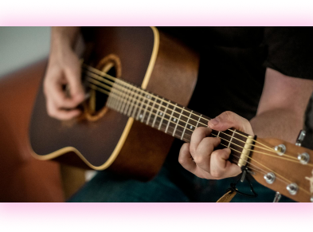

Guitarra
Toca tus primeros acordes
Instrucciones de uso
¡Tu guitarra está en Standar Tuning! Para hacer sonar el instrumento sólo tienes que presionar encima de las cuerdas
 1.png)
“Dame una guitarra, dame un piano, dame una escoba y una cuerda; No me aburriría en ningún lado” Keith Richards
¡Tu guitarra está en Standar Tuning! Para hacer sonar el instrumento sólo tienes que presionar encima de las cuerdas